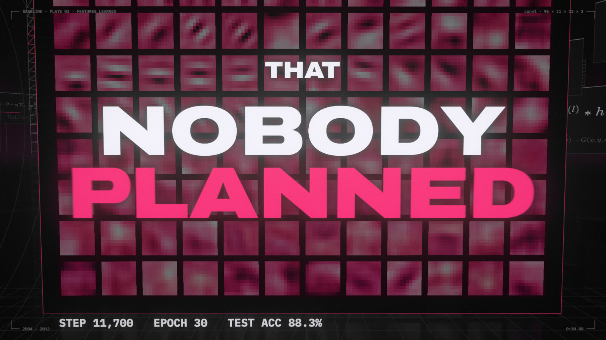
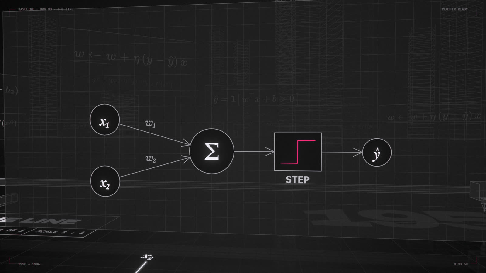
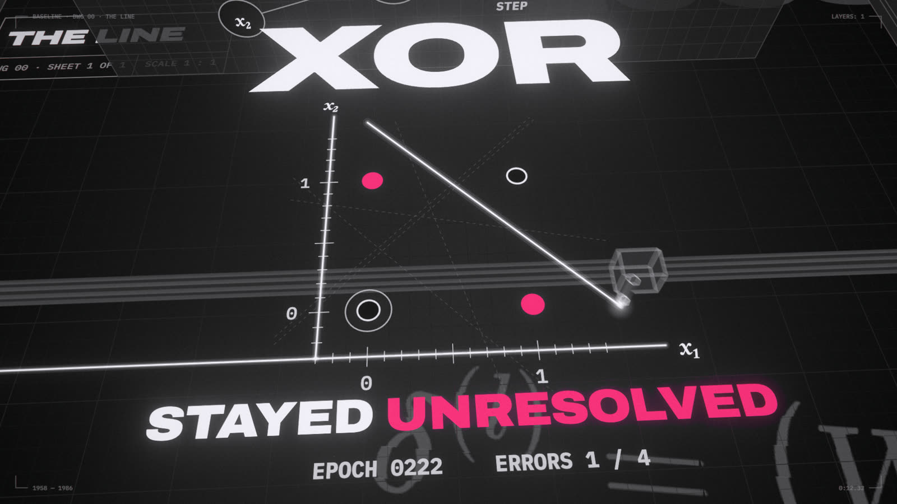
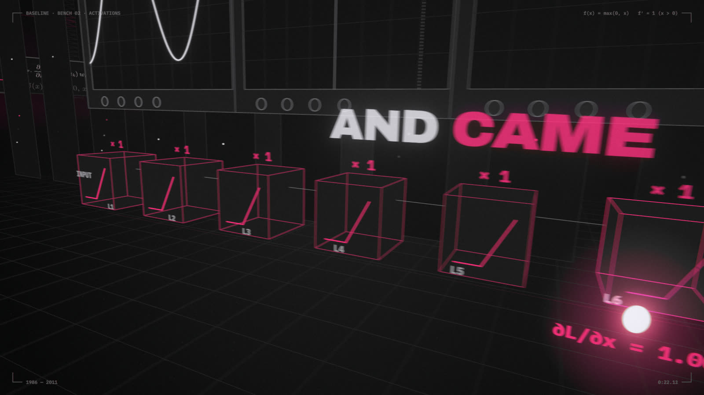
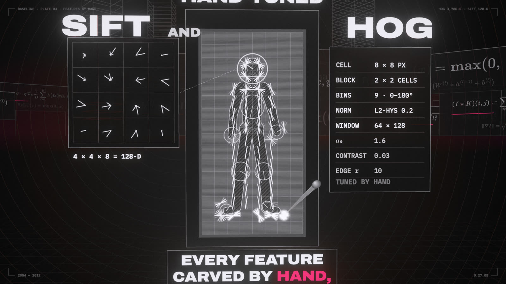
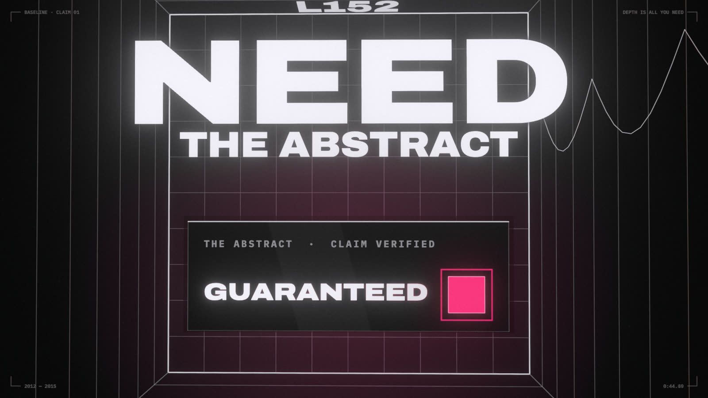

The film opens with a pen plotter drawing one line, y = 0, the first baseline. This module goes from that line to a deep convolutional network, one replacement at a time, the same way the verse does.

0:30 · LEARNED · NOBODY PLANNED: 96 real conv1 filters trained on CIFAR-10. Test accuracy 88.3% after 30 epochs.
LAB · open notebooks/01_one_line_then_many.ipynb in Jupyter. Each section below names the notebook section that runs it. Dotted words show a definition when you hover or tap them.
1.1 · 1958
The perceptron draws a line
A perceptron sorts points by which side of a straight line they fall on, and nudges the line whenever it's wrong.
A familiar idea first
A credit-score rule
Add points for each fact (income +30, missed payment −50) and approve if the total clears a cutoff. That's a perceptron: the weights are the points and the bias moves the cutoff. Learning means adjusting the points each time it approves someone it shouldn't have, or rejects someone it should have approved.
It computes a weighted sum of the inputs plus a bias and thresholds it. Geometrically, w·x + b = 0 is a line, so the perceptron is a linear classifier. Rosenblatt's learning rule moves the line toward every point it misclassifies.
The math
$$\hat y = \mathrm{step}(w\cdot x + b) \qquad w \leftarrow w + \eta\,(y-\hat y)\,x$$
LAB · notebook §1.1

0:08 · THE LINE · The perceptron's wiring: x₁, x₂ → Σ → step → ŷ, with Rosenblatt's update rule typeset below.
Back then
Rosenblatt's Mark I Perceptron was room-sized hardware with motor-driven potentiometers for weights and a 20×20 grid of photocells for eyes. Learning meant motors physically turning knobs.
The business side
The perceptron was funded by the US Office of Naval Research. Military money paid for most early AI, and the promises made to it set expectations the technology couldn't meet for decades.
Lore
The New York Times, 1958, reported that the Navy expected the machine to "walk, talk, see, write, reproduce itself and be conscious of its existence." The hype cycle is older than the transistor radio.
1.1 · 1969
XOR stays unresolved
Some patterns can't be split by any single line, and XOR, the simplest one, broke the perceptron.
A familiar idea first
One if-statement isn't enough
Try writing a != b for two 0/1 inputs as a single if (w1*a + w2*b > t). No choice of weights works. You need two conditions combined: (a or b) and not (a and b). A perceptron is exactly that single if-statement.
XOR is 1 when exactly one input is 1. No line puts (0,1) and (1,0) on one side and (0,0) and (1,1) on the other, so the best any line can do is 3 out of 4. The four points aren't linearly separable.
LAB · notebook §1.1

0:12 · THE LINE · XOR. The EPOCH and ERRORS counters never reach zero: no single line separates the four points.
Back then
Minsky and Papert's 1969 book Perceptrons proved the single-layer limits rigorously. Funding and interest in neural nets dried up through the 1970s, the first AI winter.
The business side
When promises break, money leaves: AI winters were funding winters. The cycle repeated in the late 1980s, when the market for specialized AI hardware (Lisp machines) collapsed.
Lore
Folklore says one book killed neural nets for a decade. Historians are more careful: funding pressure, the 1973 Lighthill report in the UK, and oversold promises all played a part. The book became the scapegoat anyway.
1.2 · 1986
Stack a hidden layer; backpropagate
A hidden layer re-draws the data in new coordinates where one line is enough, and backprop tells every weight how to help.
A familiar idea first
Logic gates, then blame
XOR is OR and NAND wired into an AND. A hidden layer learns gates like those instead of having them wired by hand. Backprop is blame assignment: when the output is wrong, work backwards and give each weight its share of the blame, the way you'd trace a latency spike upstream to the services that caused it.
Two hidden units each draw a line, and in their coordinates the XOR points become separable. That's the core idea of deep learning: each layer re-represents the data until the problem becomes simple. Backpropagation gets every weight's gradient with the chain rule, layer by layer from the loss backwards.
0:15 · THE LINE · SOLVED ✓. Each point is lifted to its hidden-layer coordinates (h₁ = OR, h₂ = NAND), where one cut separates them.
Back then
Multi-layer nets existed. Nobody had a convincing way to train them. Rumelhart, Hinton and Williams' 1986 Nature paper showed that backprop learned useful internal representations, and neural nets came back, for a while.
The business side
Backprop's first big commercial job was reading handwriting. Yann LeCun's convolutional networks at Bell Labs read an estimated 10% or more of all checks written in the US by the late 1990s.
Lore
Backprop was invented several times: Linnainmaa (1970) for automatic differentiation, Werbos (1974) for neural nets, then 1986. Jürgen Schmidhuber's long campaign to credit the earlier work became its own meme: whatever you invented, Schmidhuber did it in 1991.
1.3
Sigmoid squashed the signal
Each sigmoid layer shrinks the learning signal by at least 4×, so in a deep stack the early layers barely learn.
A familiar idea first
Compounding losses
Pass a message through 8 relays that each keep only a quarter of the volume, and 0.25⁸ ≈ 0.000015 of it arrives. Backprop sends the learning signal back through the layers in the same way, so the losses compound.
The sigmoid squeezes numbers into (0, 1), and its slope is at most ¼. Backprop multiplies one slope per layer, so after 8 layers the gradient is at most 0.25⁸ ≈ 0.000015 of its size at the output. That's the vanishing gradient.
0:18 · SQUASH · A gradient light runs backwards from LOSS through six sigmoid stages, losing × ¼ at each one.
Back then
Through the 1990s and 2000s, deep nets were considered practically untrainable. People used one or two hidden layers, or pre-trained layers one at a time (Hinton's 2006 deep belief nets) as a workaround.
Lore
Sepp Hochreiter diagnosed the vanishing gradient in his 1991 diploma thesis, written in German. For years almost nobody outside Munich read it.
1.3 · 2010–12
ReLU clipped the negatives
ReLU passes the signal through at full strength, so deep stacks can finally learn.
A familiar idea first
A valve instead of a dimmer
A sigmoid is a dimmer that never passes more than a quarter of a change through. ReLU is a valve: fully open for positive values, shut for negative ones. A row of open valves loses nothing.
ReLU = max(0, x) has slope 1 for positive inputs. Together with a sensible initialization, the gradient reaches early layers intact. AlexNet used it in 2012.
LAB · notebook §1.3

0:22 · SQUASH · The same chain with ReLU: × 1 at every stage, so the gradient arrives at full strength.
Back then
The fix was almost embarrassingly simple, which is partly why it took so long. A function with a kink at zero looked mathematically unappealing next to smooth sigmoids.
The business side
Cheap math matters at scale. ReLU is a single comparison, while a sigmoid needs an exponential. Across billions of activations per image, simpler operations mean faster, cheaper chips.
Lore
ReLUs can "die": a unit that only ever sees negative inputs outputs zero forever and stops learning. The cures (Leaky ReLU, ELU, GELU, Swish) each got their own paper, and some were renamed rediscoveries.
1.4 · 1999–2005
Every feature carved by hand
Before deep learning, experts designed the features a classifier looked at.
A familiar idea first
Regexes vs a learned parser
Feature engineering is like writing regexes to pull fields out of log lines: precise, brittle, and you need new ones for every new format. Learned features are like a parser that works out the format from examples.
Vision meant feature engineering. Experts built descriptors like SIFT and HOG (histograms of edge directions in small cells) and fed them to a classifier. In the lab you write HOG in about 15 lines of numpy.
LAB · notebook §1.4

0:27 · CARVED · HOG engraved on a copper plate: a 9-direction gradient histogram per 8 × 8 cell, with the SIFT descriptor panel beside it.
Back then
A PhD could be spent improving one descriptor by a couple of points. Progress was real but slow, and every new task needed new hand-tuned features.
The business side
Hand-engineered vision did ship. The Viola–Jones face detector (2001) put face-finding boxes in consumer cameras within a few years. But every new product needed its own team of feature engineers.
Lore
SIFT was patented. OpenCV kept it in a separate "nonfree" module until the patent expired in March 2020, by which time CNNs had long since taken over.
1.5 · 1992–95
SVM: the widest margin; the kernel trick
An SVM picks the dividing line with the widest empty street on both sides, and a kernel lets it bend that line.
A familiar idea first
A safety buffer and a derived column
Margin: of all the lines that separate the classes, pick the one with the biggest buffer on both sides, like routing a road as far as possible from both cliff edges.
Kernel: if no rule works on your columns, add a computed one. Points inside a ring vs outside can't be split by a line on (x, y), but add r = x² + y² and "r < 1" is a one-line rule. The kernel trick gets that effect without ever building the new columns, even infinitely many of them.
Only the points on the curbs, the support vectors, define the margin. The kernel trick separates data no line can split by implicitly lifting it into more dimensions. The film's version: lift by x₁² + x₂², then cut with a flat blade. In the lab, the HOG features from §1.4 go into a linear SVM on real photos: the 2005 recipe, and the baseline the CNN has to beat next.
0:34 · MARGIN · KERNEL TRICK: pistons lift each post by x₁² + x₂², and a flat blade then separates the rings.
Back then
In the 2000s SVMs were the respectable choice: a convex optimization problem, guarantees, and one global optimum. Neural nets were the unfashionable choice: local minima, magic numbers, and no theory.
The business side
SVMs ran much of 2000s industry ML (text classification, bioinformatics, early vision): reliable, few knobs, good open-source libraries like libsvm. Predictability sold better than peak accuracy.
Lore
Neural nets were so out of fashion that a small group funded by the Canadian Institute for Advanced Research (Hinton, LeCun, Bengio and others) half-jokingly called themselves the "deep learning conspiracy."
1.6 · 2012
Learned filters nobody planned
A CNN learns its own feature detectors from raw pixels, and they beat the hand-made ones.
A familiar idea first
grep for patterns, in 2-D
Slide a small template over an image. At each spot, multiply the overlapping pixels pairwise and add them up: the dot product, a match score. It's like grep sliding a pattern along text, only fuzzy. A convolution layer learns many templates at once, and the next layer looks for patterns among their matches.
A convolution slides a small learned filter over the image. A CNN's first-layer filters start as noise and end up as edge and color detectors. On the laptop tier your CNN beats HOG + SVM by more than ten points on CIFAR-10 in about two minutes.
LAB · notebook §1.6
0:30 · LEARNED · NOBODY PLANNED: 96 real conv1 filters trained on CIFAR-10. Test accuracy 88.3% after 30 epochs.
Back then
In 2012 AlexNet won the ImageNet challenge with 15.3% top-5 error, against 26.2% for the runner-up. Vision researchers changed fields almost overnight.
The business side
AlexNet ran on gaming GPUs, which made Nvidia's CUDA the platform for AI. In late 2012 Hinton's three-person startup was auctioned to tech companies; Google won at $44M. Selling GPUs for AI later made Nvidia one of the world's most valuable companies.
Lore
AlexNet trained for about six days on two consumer GTX 580 gaming GPUs, reportedly in Alex Krizhevsky's bedroom at his parents' house. ImageNet's 14 million labels came from crowd workers on Amazon Mechanical Turk.
1.7 · 2015
Depth is all you need: residual connections
Give each block a shortcut, output = x + f(x), and a network can be hundreds of layers deep.
A familiar idea first
A patch, not a rewrite
Each block outputs its input plus a change, like a diff applied to a file. Doing nothing is the easy default (an empty diff), so extra layers can't easily make things worse, and the gradient flows straight through the + like an unbroken wire.
Naive deep stacks won't train: past some depth, adding layers made even the training error worse. A residual connection means each block only learns a correction, and gradients always have a clean path back. In the lab, a plain 30-layer net is stuck at chance and the residual one reaches 100%.
The math
$$x_{l+1} = x_l + \mathcal{F}(x_l)$$
LAB · notebook §1.7

0:44 · THE CLAIM · DEPTH · NEED at the bottom of a 152-floor shaft, ResNet's depth. The black-glass stele is laser-engraved GUARANTEED.
Back then
VGG (2014) topped out around 19 layers. ResNet went to 152 layers in 2015 and won ImageNet with 3.57% top-5 error, below the roughly 5% estimated for a careful human.
The business side
ResNet-50 became the standard yardstick for AI chips. The industry's MLPerf benchmark used it for years, so hardware makers tuned their products to run it fast.
Lore
The meme of the era is a clown-makeup image macro captioned STACK MORE LAYERS. It mocked how often "make it deeper" turned out to be the whole idea.
Checkpoint
Why can't one perceptron learn XOR, and what does a hidden layer change?Answer
No single line separates the two classes. Hidden units each draw a line, and in their coordinates (OR, NAND) one line separates the points.
What is backprop, in one sentence?Answer
The chain rule, applied from the loss back through every layer, to get each weight's gradient.
Name two fixes that made deep nets trainable, and what each fixes.Answer
ReLU (with a matching initialization) stops the gradient shrinking at every layer; residual connections give the gradient a clean path back through the +.
How big was the gap between HOG + SVM and the CNN in your run? What would more data do to each?Answer
On the laptop tier the CNN wins by about 10–15 points. More data keeps improving the CNN; HOG + SVM flattens out sooner, because its features can't get better.